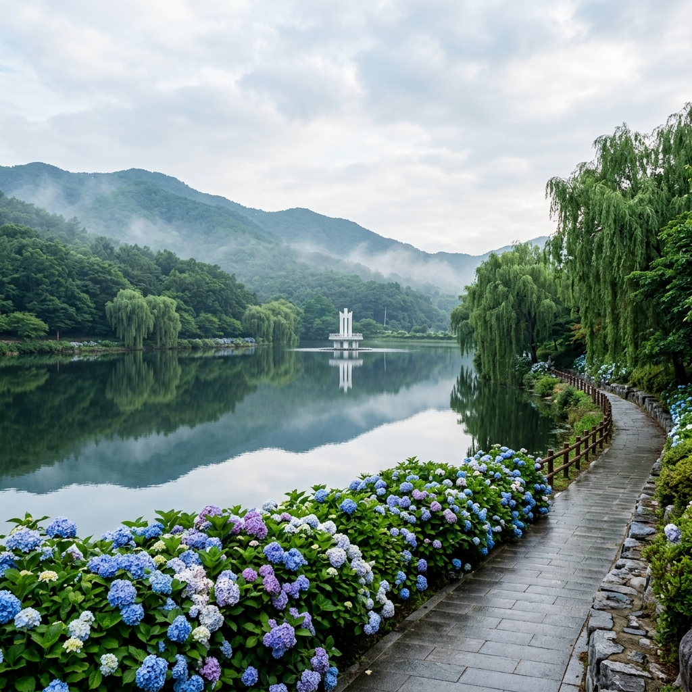
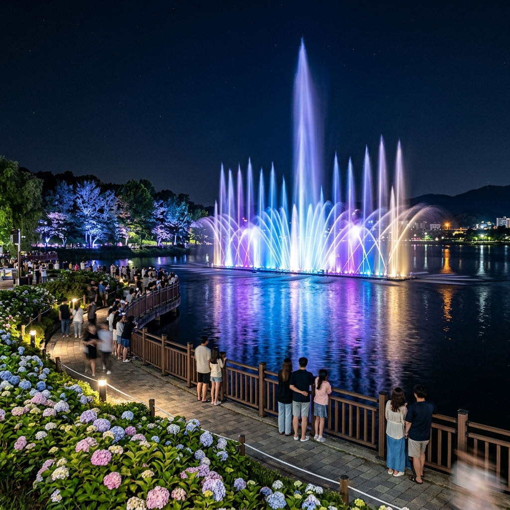
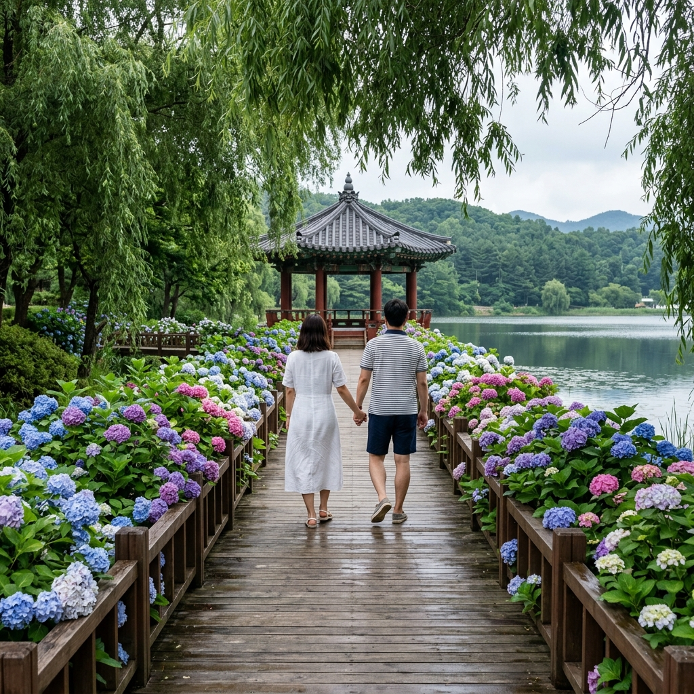

충주 호암지 수국길 2026 — 5만 송이 수국 군락과 야간 음악분수, 수변 산책 완전 가이드
충청북도 충주시 호암동에 자리한 호암지(虎岩池)는 도심에서 걸어서 닿을 수 있는 충주 최고의 수변 힐링 명소입니다. 저수지 주변 산책로를 따라 심어진 약 5만 송이의 수국이 6월 중순부터 파란색과 보라색 꽃물결을 이루며, 연간 약 120일 운영되는 길이 120m의 음악분수와 야간 조명쇼까지 더해져 낮과 밤 모두 특별한 여행 경험을 선사합니다. 수달이 서식할 만큼 맑은 수질을 자랑하는 이 자연 저수지는 충주 시민은 물론 수도권 방문객들에게도 점점 알려지고 있는 숨은 명소입니다.
💧 호암지란? — 충주 도심 속 자연 저수지의 역사
호암지는 충주시 도심 서쪽 자락에 위치한 인공 저수지로, 조성된 지 수십 년이 넘어 지금은 완전히 자연 생태계에 동화된 녹지 공간으로 자리 잡았습니다. 저수지 이름의 '호암(虎岩)'은 인근 지역의 옛 지명에서 유래한 것으로, 충주 주민들에게는 어린 시절부터 친숙한 추억의 장소입니다.
저수지 둘레길은 총 약 3.5km로, 평지 위주의 편안한 수변 산책로가 조성되어 있습니다. 길을 따라 수양버들과 왕버들, 메타세쿼이아, 벚나무 등 다양한 수목이 계절마다 다른 풍경을 연출합니다. 특히 6월에는 산책로 전체에 수국 화단이 펼쳐져 충주에서 손꼽히는 여름 포토존으로 부상하고 있습니다.
수달(Lutra lutra)이 서식한다는 사실이 인근 주민들 사이에서 확인되어, 호암지는 단순한 도시 공원을 넘어선 생태적 가치를 인정받고 있습니다. 수달은 수질이 맑고 먹이가 풍부한 1급 환경에서만 서식하는 천연기념물(제330호) 지정 동물로, 그 존재 자체가 호암지 생태 건강성의 증거입니다. 2025년 뉴스1 보도에 따르면 호암지 주변 공사 중에도 수달의 이동 경로를 배려한 생태 이동 통로 설치가 논의될 만큼, 충주시도 수달 보호에 적극적인 입장을 취하고 있습니다.

호암지 수변 수국길과 음악분수 전경 / AI 제작 이미지
🌸 2026년 수국 개화 현황 — 5만 송이의 꽃물결
호암지 수국 군락은 저수지 북쪽 산책로를 중심으로 약 1km에 걸쳐 집중적으로 조성되어 있습니다. 충주시가 수년에 걸쳐 조성한 수국 화단은 현재 약 5만 송이 규모로 자라났으며, 매년 6월이면 이 구간 전체가 보라색과 파란색의 꽃 터널을 이루어 사진 촬영 인파가 몰립니다.
2026년 수국 개화 시기는 6월 중순(6월 10일~15일경) 시작, 6월 25일~7월 10일이 만개 피크로 예상됩니다. 수국은 기온이 급격히 오르기 시작하는 초여름에 개화를 시작하며, 비가 자주 내리는 장마 전후에 꽃이 가장 풍성하게 피어납니다.
호암지 수국의 특징은 품종이 다양하다는 점입니다. 흔히 볼 수 있는 대형 구형 꽃인 서양수국(H. macrophylla) 외에도, 작은 꽃이 모인 접시 형태의 산수국(H. serrata), 흰색 꽃이 아름다운 나무수국(H. paniculata) 등 여러 품종이 혼재하여 다양한 색감과 질감을 한 곳에서 감상할 수 있습니다. 이처럼 품종 다양성이 높다는 점에서 식물 애호가와 사진작가들에게 더욱 매력적인 장소입니다.
🎵 호암지 음악분수 — 길이 120m 스펙터클 워터쇼
호암지의 또 다른 자랑은 2025년 새롭게 업그레이드된 음악분수입니다. 저수지 중앙부에 설치된 이 분수는 길이 120m로, 충주시가 자랑하는 대형 수경 시설입니다. 서울신문 2025년 2월 보도에 따르면, 2025년 5월부터 본격 가동을 시작하여 2026년 현재 안정적인 운영 단계에 접어들었습니다.
음악분수는 5월부터 10월까지 운영되며, 운영 시간은 평일 오후 8시·9시 각 1회, 주말 및 공휴일 오후 7시·8시·9시 각 1회입니다. '스페셜 워터쇼'는 매주 주말에 진행되며, 일반 음악분수보다 규모와 연출이 강화된 프로그램으로 방문객들의 호응을 얻고 있습니다.
분수 주변에는 야간 조명 시설이 갖춰져 있어, 어두워진 이후 분수 쇼와 함께 저수지 수면에 반사되는 빛의 향연은 낮의 수국 풍경과는 전혀 다른 낭만적인 야경을 선사합니다. 수국이 만개한 6월 저녁에는 보랏빛 수국 화단과 푸른 야간 조명이 어우러지는 장면이 연출되어, 인스타그램 감성 사진을 찍으러 일부러 저녁 시간대에 찾아오는 방문객들도 많습니다.

호암지 야간 음악분수 쇼와 수국 야경 / AI 제작 이미지
🦦 생태 보물 — 수달이 사는 청정 저수지
호암지는 도시 저수지임에도 불구하고 수달이 서식할 만큼 탁월한 수질과 생태 환경을 유지하고 있습니다. 천연기념물 제330호 수달(Lutra lutra)은 물고기를 주식으로 삼으며 하천·호수 수계의 최상위 포식자로, 그 존재 자체가 해당 수계의 건강성을 보증합니다.
호암지에서는 이른 아침이나 해 질 무렵 산책로에서 수달을 목격했다는 시민 제보가 이어지고 있습니다. 수달은 행동 반경이 넓고 경계심이 강해 쉽게 모습을 드러내지 않지만, 개장 직후나 저녁 무렵 사람이 드문 시간대에 조용히 이동하다 보면 물가에서 유영하거나 먹이를 사냥하는 모습을 드물게 관찰할 수 있습니다.
저수지 안에는 잉어·붕어·메기 등 다양한 담수어가 서식하며, 왜가리·청둥오리·흰뺨검둥오리 등 수조류(水鳥類)들이 사계절 머물고 있습니다. 수달의 서식을 배려한 충주시의 생태 관리 방침 덕분에 호암지는 도시 생물다양성의 거점 역할을 하고 있습니다.
🚶 호암지 수변 산책로 — 전 구간 가이드
호암지 둘레길은 크게 북쪽 수국 구간(약 1.0km)과 남쪽 수목 구간(약 2.5km)으로 나뉩니다.
북쪽 수국 구간은 수국 화단이 밀집한 핵심 포토 구간입니다. 수변 목재 데크와 포장 산책로가 이어지며, 데크 위에서 수면 쪽을 바라보면 수국과 저수지가 한 프레임에 담기는 아름다운 구도가 연출됩니다. 이 구간 중간쯤에 수국 쉼터 정자가 설치되어 있어 잠시 앉아 풍경을 즐기기 좋습니다.
남쪽 수목 구간은 메타세쿼이아 가로수와 왕버들 군락이 이어지는 구간입니다. 나무 그늘이 충분해 한낮의 뙤약볕도 문제없이 걸을 수 있으며, 저수지 남쪽 끝에는 수달 관찰 덱과 조류 관찰대가 설치되어 있습니다. 전체 둘레를 한 바퀴 도는 데는 약 1시간~1시간 20분이면 충분합니다.
산책로 전 구간에 걸쳐 화장실 3개소, 주차장 2개소, 음수대가 설치되어 있어 별도의 준비 없이 편안하게 이용할 수 있습니다. 특히 북쪽 주차장은 수국 구간에서 가장 가깝고, 남쪽 주차장은 음악분수 관람석과 가까워 목적에 따라 선택하시면 됩니다.
🚗 교통 정보 및 주차 안내
| 항목 | 내용 |
|---|
| 위치 | 충청북도 충주시 호암동 일대 (호암지 수변공원) |
| 자가용 | 중부내륙고속도로 충주IC → 시내 방향 10분 거리 |
| 버스 | 충주시외버스터미널 → 시내버스 이용, 호암동 하차 |
| 서울 출발 시 | 고속버스 동서울터미널 → 충주 약 1시간 30분 |
| 주차 | 호암지 북측·남측 무료 주차장 운영 (수국 피크 시 혼잡) |
| 음악분수 운영 | 5월~10월 / 주말 오후 7시·8시·9시 (스페셜 워터쇼) |
| 입장료 | 무료 |
충주는 서울에서 고속버스(동서울터미널 기준) 기준 약 1시간 30분 거리로, 수도권 당일치기 여행지로도 부담이 없습니다. 자가용 이용 시 중부내륙고속도로 충주IC 또는 충원 IC를 이용하면 시내까지 10~15분 이내에 도착합니다.
수국 만개 기간(6월 하순~7월 초) 주말에는 주차장 혼잡이 심화될 수 있으니, 개장 시간 전 이른 아침이나 오후 늦게 방문하는 것이 현명합니다. 음악분수 쇼를 목적으로 한다면 저녁 6시 이후 도착해 산책과 음악분수를 함께 즐기는 일정을 짜는 것이 가장 효율적입니다.

호암지 수변 데크길을 따라 펼쳐지는 수국 터널 / AI 제작 이미지
🍱 충주 호암지 주변 맛집 & 연계 관광지
충주를 대표하는 먹거리는 단연 사과입니다. 충주 사과는 일교차가 큰 내륙 분지 기후 덕분에 당도와 향이 뛰어나기로 유명하며, 6월 시즌에는 아직 사과가 나오기 전이지만 지역 농산물 직판장에서 사과즙·사과와인·사과드레싱 등 가공품을 구입할 수 있습니다.
호암지에서 차로 10분 거리의 충주 시내에는 다양한 식당가가 형성되어 있습니다. 충주의 향토 음식인 어죽(민물 생선 죽)과 올갱이국밥(다슬기 국밥)은 이 지역을 방문했을 때 놓치지 말아야 할 별미입니다. 올갱이(다슬기)는 충북 내륙 하천에서 채취한 것으로, 숙취 해소와 간 기능 개선에 효능이 있다고 알려져 있습니다.
호암지와 함께 들르기 좋은 연계 관광지로는 충주 탄금대가 있습니다. 탄금대는 신라 악성(樂聖) 우륵이 가야금을 탔다고 전해지는 역사 유적지로, 남한강이 굽이치는 절경 위의 넓은 공원으로 조성되어 있습니다. 호암지에서 탄금대까지는 자가용으로 약 10분 거리입니다.
📝 방문 전 체크리스트 & 주의 사항
✅ 충주 호암지 방문 필수 체크사항
✔ 수국 만개 피크: 6월 25일~7월 10일경
✔ 음악분수: 주말 오후 7시·8시·9시 (스페셜 워터쇼)
✔ 입장 및 주차 무료
✔ 반려동물 동반 시 목줄 착용 필수
✔ 수달 서식지 인근 구간에서 큰 소음 자제 요청
✔ 주말 성수기 주차 혼잡 — 오전 일찍 또는 저녁 방문 권장
✔ 저녁 음악분수 관람 후 귀가 시 주차장 출구 대기 예상
#충주호암지
#호암지수국
#충주수국명소
#충주음악분수
#충주여행2026
#수국개화
#충북여행
#충주당일치기
#수달서식지
#충주가볼만한곳